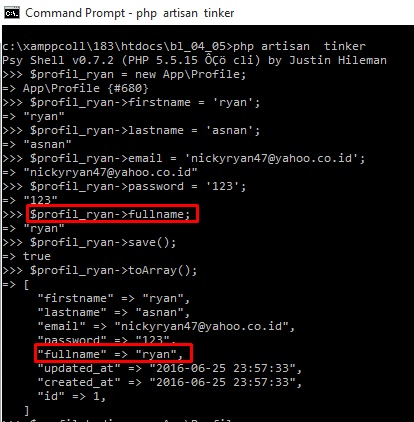
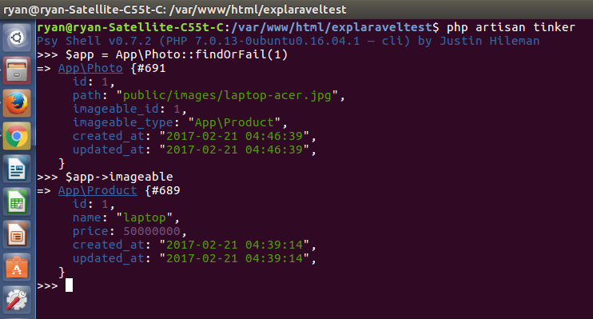

1 Model Eloquent¶
Table of Contents
- 1 Model Eloquent
- 1.1 ORM (
Object Relational Mapping) - 1.2 CRUD dasar dengan Eloquent
- 1.3 Query Dalam Eloquent
- 1.4 Query Scope
- 1.5 Accessor dan Mutator
- 1.6 Event dan Model Observer
- 1.7 Penggunaan property dan method pada data dari relasi model
- 1.8 has dan whereHas
- 1.9 HasManyThrough
- 1.10 Mendefinisikan Relationship di Laravel
- 1.1 ORM (
1.1 ORM (Object Relational Mapping)¶
ORM (Object Relational Mapping) dalam software komputer diartikan sebagai teknik pemrograman yang menkonversi data berbagai tipe sistem ke dalam bahasa OOP.
ORM ini akan membentuk semacam object virtual database yang mana dapat diakses/digunakan dari dalam bahasa pemrograman yang menggunakannya.
Laravel memiliki ORM tersendiri, yaitu eloquent.
Eloquent ini memiliki banyak fitur built in yang cukup membantu terutama pada relasi antar tabel.
Eloquent dapat menangani relasi antar tabel seperti One to One, One to Many, Many to Many, Has many through, Polymorphic relation dan Many To Many Polymorphic Relations.
Berikut fitur yang ada pada Eloquent :
- Mass Assignment
- Soft Deleting
- Timestamps
- Query Scopes
- Eager Loading
- Accessors & Mutators
- Attribute Casting
- Model Events
- Model Observers
- Model URL Generation
- Converting To Arrays / JSON
1.1.1 Konfigurasi eloquent¶
Dalam menggunakan eloquent laravel maka terdapat beberapa hal yang perlu untuk diperhatikan.
Dalam satu class eloquent mewakili satu tabel dalam database, dan class ini sering pula diartikan sebagai model, karena memodelkan dari tabel yang diwakilkan.
Terdapat aturan penamaan antara tabel dengan model di laravel, yaitu pada tabel harus bernama plural atau jamak (s/es) sedangkan pada model harus bernama singular atau tunggal(tanpa s/es).
Note
Penggunaan plural dan singular diatas hanya untuk memudahkan saja dalam menipulasi di model, karena laravel telah menyediakan fitur khusus yang akan mengambil tabel sebagai model secara default, yaitu dari metode plural dan singular tersebut.
Suatu tabel yang akan digunakan pada laravel dapat memiliki nama model yang lain (tidak menggunakan plural ataupun singular dari nama tabelnya).
Tentunya laravel memiliki cara tersendiri dalam membuat konfigurasi jika semisal nama antara tabel dengan model berbeda, yaitu dengan membuat property table dengan isian string nama tabel yang akan digunakan pada model tersebut.
Setelah membuat adanya tabel maka untuk membuat model bisa dilakukan dengan command : php artisan make:model Nama_tabel_singular, jangan lupa untuk memberikan huruf besar di depan(camelcase).
Setelahnya akan tercipta file baru di direktori app.
Setelah membuat model kita bisa mengakses tabel melalui model ini, semisal akan menampilkan data dengan id = 1:
hal yang perlu diingat adalah dalam melakukan manipulasi basic masih menggunakan dengan query builder, artinya kita hanya mengubah DB::table('nama_tabel') dengan nama_model::.
Note
Pembuatan singular dan plural Dalam membuat tabel terkadang kita tidak menggunakan bahasa inggris dari tabel tersebut sehingga tidak mengerti apa nama plural dan singularnya, selain itu ada beberapa aturan dalam penamaan plural singular yang tidak umum, maka dari itu laravel memiliki cara tersendiri dalam mengetahuinya, yaitu dengan menggunakan syntax ‘str_plural(‘nama_singular’)’ yang akan mengetahui nama jamak(plural) dan ‘str_singular(‘nama_plural’)’ yang akan mengetetahui nama singularnya.
Namun perlu diperhatikan bahwa saat membuat model yang menggunakan underscore, maka selanjutnya laravel akan menghilangkan underscore tersebut dan merubah huruf di belakang underscore menjadi huruf besar, misal
php artisan make:model membership_type maka nantinya akan berubah menjadi MembershipType pada model.
1.1.2 Mengubah nama tabel yang berbeda dan mengubah lokasi model¶
Nama antara model dengan tabel dapat berbeda dengan cara memberikan value pada property table seperti
protected $table = barang_yang_dikirimkan;
selain itu kita juga dapat memindahkan lokasi model sehingga tidak selalu berada pada direktori app dengan cara memberikan tambahan pada namespace pada model, misal:
kita memindah semua model ke dalam direktori App/Model
maka setiap file model pada namespace kita ganti menjadi namespace App\Model;
1.1.3 Timestamp¶
Secara default ketika membuat suatu migration maka akan terdapat method timestamps, method ini akan membuat 2 field yaitu created_at dan updated_at.
Ketika kita tidak membuat field ini maka saat menjalankan query dengan ORM eloquent akan muncul error.
berikut adalah cara dalam menambahkan data dengan objet eloquent, perlu diketahui kita harus membuat object terlebih dahulu pada model untuk kemudian baru memanipulasinya.
Contoh berikut tidak mengguanakan timestamps(tidak terdapat field created_at dan updated_at):
>>> $mbPro = new App\Product;
=> <App\Product #00000000714e53d80000000052ee6663> {}
>>> $mbPro->name = "MacBook Pro 2015"
=> "MacBook Pro 2015"
>>> $mbPro->description = "Retina Display";
=> "Retina Display"
>>> $mbPro->price = 24000000;
=> 24000000
>>> $mbPro->stock = 18;
=> 18
>>> $mbPro->save();
Illuminate\Database\QueryException with message 'SQLSTATE[42S22]: Column not found: 1054 Unknown column 'updated_at' in 'field list' (SQL: insert into `products` (`name`, `description`, `price`, `stock`, `updated_at`, `created_at`) values (MacBook Pro 2015, Retina Display, 24000000, 18, 2016-04-27 00:56:35, 2016-04-27 00:56:35))'
Terlihat bahwa query sql salah dikarenakan terdapat value tanggal dimasukkan namun tidak terdapat adanya field(pada ‘2016-04-27 00:56:35, 2016-04-27 00:56:35’).
Tapi ingat ini hanya berlaku pada object eloquent ,sedangkan pada query builder biasa tidak akan terpengaruh.
Dalam materi seelumnya yaitu seeding mengapa field created_at `` dan ``updated_at kosong, hal itu dikarenakan kita tidak menggunakan object model(eloquent) namun hanya melakukan insert dengan query builder.
Untuk menghilangkan fitur ini kita dapat menambahkan property timestamps yang bervalue false , misalkan
protected $timestamps = false;
Dan sebagai tambahan laravel akan menggunakan UTC, sehingga saat memasukkan data dengan model maka catatan waktunya agak berbeda, oleh karena itu sebaiaknya diubah terlebih dahulu konfigurasi UTC pada config/app.php pada bagian timezone ubah menjadi Asia/Jakarta.
1.1.4 Mengubah Primary key¶
Laravel memiliki aturan dalam penamaan field yaitu setiap primary key harus bernama id.
Jika tidak maka penggunaan model akan error.
Tentu tidak masalah ketika akan membuat database secara awal dengan laravel, namun bagaimana jika sudah terdapat database dari luar dan strukturnya fieldnya sudah ditentukan, mungkin akan sulit dalam memanipulasinya.
Untuk mengubah primary key dalam eloquent maka dapat menambahkan property primaryKey dengan value adalah field yang dijadikan primary key misal:
protected $primaryKey = productd_id;
1.1.5 Mass Assignment¶
Syntax dasar dalam melakukan insert dan update dengan model adalah dengan membuat object dari model tersebut kemudian mengisikan field nya pada property dengan value, kemudian melakukan method save() seperti pada contoh timestamps diatas
Kemudian bagaimanakah jika kita akan memasukkan/mengedit data tanpa harus menggunakan property object model dalam satu syntax???
Kita dapat menggunakan mass assignment, yaitu memperbolehkan laravel untuk melakukan insert/update lebih dari satu data.
Dengan memberikan mass assignment maka kita dapat menggunakan method create() dan update()
dengan menggunakan method create ini maka akan mempermudah dalam memasukkan/mengedit data pada database.
data yang akan dimasukkan akan dipassing ke dalam method create dalam bentuk array assosiatif, misal :
untuk insert data:
$model = Model::create(["field1"=>"value", "field2"=>"value"]);
untuk update data maka kita harus mendapatkan dahulu datanya dengan seleksi:
$model = Model::find(1);
$model->update(["field1"=>"value", "field2"=>"value"]);
Selain itu jika semisal kita memiliki addanya input yang sangat banyak , semisal memiliki 20 field dan semua data array sudah ada (pas dengan field) , maka kita dapat menggunakan syntax:
$model = Model::create(Input::all());
Namun sebelum menggunakan fitur mass assignment ini kita harus memberikan koonfigurasi pada field mana yang dapat menggunakan mass_assignment.
Terdapat 2 jenis cara dalam menentukan field yang menggunakan mass assignment :
- whitelist
teknik ini adalah memberitahu field mana yang dapat diisi jika menggunakan method
createatauupdate.Caranya dengan menambahkan property
fillablepada file model dengan value berupa array 1 dimensi yangg berisikan nama fieldnya, misal:protected $fillable = [`nama`,`jumlah`];
- blacklist
teknik ini adalah kebalikan dari whitelist,
caranya adalah menambahkan property
guardedpada file model dengan value berupa array 1 dimensi yang berisikan nama fieldnya, misal:protected $guarded = [`nama`,`jumlah`];
Sebagai tambahan ketika kita telah menetukan field mana saja yang dapat diisi dan tidak, maka ketika kita masih mengisikan dengan method create dan update hasil daripada field nya adalah NULL.
Untuk mengisinya bisa menggunakan syntax query dasar eloquent
Note
Penggunaan query syntax dasar pada eloquent sangat jarang digunakan.
Dari pengamatan penulis biasanya banyak program laravel yang menggunakan fitur mass assignment, sehingga ketika insert atau update data menggunakan method create() dan update().
Fitur mass assignemnt ini memiliki banyak kegunaan diantaranya, pada aplikasi posting terdapat user member, user ini dapat mengisi pada field title dan content namun tidak dapat mengubah field published.
Ini dikarenakan telah terdapat whitelist pada field title dan content saja.
Dan nantinya admin dapat mengubah field published ini dengan query syntax dasar eloquent(tidak menggunakan method create atau update).
Tentu ini jauh lebih aman, meskipun kita sendiri dapat mendesain pada aplikasi untuk tidak membuat adanya celah pada user member untuk melakukan pengubahan field published
Note
Meskipun dinamakan mass assignment namun bukan berarti kita dapat menambahkan/mengedit data dalam satu syntax, seperti misalkan dengan method create dan update kita tidak dapat menambahkan lagi data yang dapat dimasukkan.
Artinya hanya satu data yang dapat masuk atau satu data yang dapat diedit.
Satu-satunya cara dalam melakukan insert/update lebih dari satu data dalam satu syntax adalah dengan query builder.
1.2 CRUD dasar dengan Eloquent¶
Dalam ORM eloquent maka dalam memanipulasi data di dalam database sedikit berbeda, untuk menggunakan setiap syntax CRUD maka kita harus membuat object model tersebut baru kita dapat memanipulasinya.
Method yang digunakan tidaklah sama dengan query builder.
Sangat disarankan untuk menggunakan fitur mass_assignment sehingga setiap memanipulasi data seperti insert dan update jauh lebih mudah.
Perlu diketahui bahwa ketika kita menggunakan object dari eloquent maka kita hanya dapat memanipulasi pada satu data saja.
ingat kita hanya dapat memanipulasi pada satu data saja dengan menggunakan eloquent
cara lain dalam menambah data adalah membuat object model lalu mengisi semua propertynya dan menjalankan method save()
untuk mencari data dengan id tertentu, dengan lebih dari satu
selain itu kita juga dapat mencari data dengan method ‘findOrFail’, perbedaanya adalah jika id tidak ada maka akan muncul error exxception
Dan sebenarnya kita juga dapat membuat exception sendiri dari method ‘findOrFail’ ini.
update dengan method update
update dengan query eloquent , hehe lupa menggunakan method save()
delete, menggunakan method delete()
1.3 Query Dalam Eloquent¶
Dalam eloquent proses penulisan query membutuhkan 3 unsur yaitu :
1.``Model``
2.``Query Constraint``
3.``Fetch``
Model adalah model yang digunakan dalam mengakses tabel.
Query Constraint adalah kriteria yang akan diberikan untuk mendapatkan data sesuai dengan kebutuhan, biasanya dalam query constraint menggunakan method where.
Fetch adalah pengekseksekusian kode yang diberikan atau untuk mendapatkan data dari tabel yang telah diberikan kriteria tertentu.
Secara teori, query constraint dapat berjumlah lebih dari satu, sedangkan fetch hanya satu:
Model::constraint()
->constraint()
->constraint()
->fetch();
Namun query constraint itu bersifat opsional, karena dalam beberapa query seperti mendapatkan semua data atau query sederhana lain tidak memerliukan query constraint.
1.3.1 Fetch¶
Berikut adalah beberapa method dalam fetch query, beberapa diantaranya sudah digunakan pada materi sebelumnya
find : mencari satu record
findOrFail : mencari satu record, apabila tidak ditemukan akan mengakses exception
all : mengambil semua data
first : mengambil record pertama dalam tabel
findOrNew : mencari satu record berdasarkan dari id, dan ketika tidak diketemukan idnya maka akan membuat record baru, namun masih dalam bentuk object model, dan harus mengisikan atribut baru menjalankan method save:
$product = App\Product::findOrNew(20);
$product->name = “iPad Air”; “iPad Air” $product->save();
FirstOrCreate : mencari record dengan kriteria(field) tertentu dan jika tidak diketemukan akan langsung membuat record tersebut:
$mbAir = App\Product::firstOrCreate(['name'=>'MacBook Air']); //jika tidak ada data dengan 'name' MacBook Air maka akan langsung membuat record.
FirstOrNew : hampir sama dengan firstOrCreate, perbedaannya adalah query ini tidak akan mentyimpan datanya sampai menjalankan method save():
$appleWatch = App\Product::firstOrNew(['name'=>'Apple Watch','price'=>500000 0]);
$appleWatch->description = ‘Sport Blue’; $appleWatch->stock = 12; $appleWatch->save();
get : method ini harus digunakan ketika terdapat query constraint
AppProduct::where(‘stock’, ‘>’, 30)->get();
update : mehtod ini untuk mengupdate record, method ini harus terdapar adanya query constriant(untuk mendapatkan datanya terlebih dahulu)
AppProduct::whereIn(‘id’,[1,3,4])->update([‘stock’=>50]);
lists : mendapatkan data pada satu/ beberapa field
pluck : mendapatkan satu data saja pada satu/beberapa field
toSql : akan menampilkan query sql yang dijalankan, kan sangat berguna ketika terdapat adanya error atau debug.
delete : akan menghapus record, penggunaanya harus terdapat adanya query constraint
AppProduct::whereNull(‘description’)->delete()
aggregate : merupakan method yang akan menghitung data pada tabel , terdapat banyak method semisal adalah count() yang akan menghitung jumlah baris
Note
Dalam melakukan firstOrCreate atau firstOrNew maka setiap model harus mendeklarasikan mass assignment pada setiap field jika tidak akan gagal.
kemudian bagaimana pengaplikasiannya ???
Jika pada firstOrCreate ketika kriteria tidak ditemukan akan dibuat, ini tentu sangatlah mudah
misalkan mencari data barang dengan nama TV polytron degan jumlah 10 , jika tidak ada maka akan langsung dibuat
keterangan syntax pencarian yang diberikan kotak warna merah diatas tentu tidak diaplikasikan pada penggunaan firstOrCreate nantinya, diatas cuma contoh saja bahwa data barang dengan nama ‘TV Polytron’ dan jumlah 10 memang belumada
nah pengaplikasiannya cukup mudah pada firstOrCreate ini
namun pada firstOrNew maka ketika data tidak ada maka hanya akan dibuatkan object tanpa me-save object tersebut ke dalam database
pada firstOrNew rasanya pengaplikasiannya jauh lebi sulit, karena dibutuhkan adanya method save().
kapan method save ini dijalankan ???
Apakah kita akan menggunakan method firstOrCreate atau firstOrNew ??
Tergantung dari aplikasi yang akan dibuat. karena memang tidak kesemua aplikasi membutuhkan method ini.
Misalkan saja kita memiliki aplikasi pengolahan nilai pada siswa.
Misalkan terdapat nilai Tugas harian dan nilai Ulangan harian.
Tentu untuk memberkan nilai secara frekuentif seperti tugas harian 1 tugas harian 2 atau nilai ulangan harian1 nilai ulangan harian 2 maka dibutuhkan adanya 2 tabel yaitu tabel kategori nilai yang akan menyimpan nilai berdasarkan kategori (seperti tugas harian atau ulangan harian) serta menyimpan frekuensi nya dan tabel nilai yang akan memasukkan nilai berdasarkan dari kategori nilai
Maka ketika akan melakukan penambahan data nilai ,ketika belum ada kategori nilai maka tabel nilai juga tidak akan diisi(karena belum mendapatkan id dariapada kategori nilai).
Sehingga dibutuhkan method firstOrNew atau firstOrCreate di tabel nilai sehingga ketika nantinya belum ada kategori nilai akan dibuatkan terlebih dahulu.
Atau bagaimana jika kita memiliki adanya aplikasi penjualan
misalkan ada pembeli melakukan pembelian barang
nah jika pembeli tersebut baru maka kita akan membuatkan datanya(nama,almat,telepon)
nah bagaimana jika pembeli tersebut datang lagi
apakah mungkin kita akan membuatakan lagi data pembelinya, tentu tidak kan
contoh lain yang lebih konkrit adalah ketika kita membuka suatu pengaturan akun , namun ternyata belum ada datanya , padahal data ini sebenarnya berelasi dengan tabel lain, maka kita dapat melakukan penambahan data jika tidak ada:
>>> $preference = App\Preference::FirstOrCreate(['user_id'=>$user->id]);
>>> $preference->update(['country'=>'CN', 'currency'=>'CNY']);
atau secara logika kita dapat menggunakan method firstOrCreate dalam membuat data baru atau mengupdate data saja, tentu ini lebih praktis daripada membuat data dari awal, bisa saja data yang dibutuhkan hanya satu, jika membuat data dari awal maka bisa saja nanti datanya lebih dari satu
seperti misalkan
kita membuat aplikasi log user yaitu pencatatan user dalam melakukan login terakhir
misal user login lalu secara otomatis kita akan menyimpan datanya jika belum ada data log, kita akan mengisi data login_terakhir
lalu user yang sama login lagi maka kita akan mengupdata data login_terakhir dan bukan menambah lagi datanya.
1.3.2 Query Constraint¶
Ketika kita membutuhkan adanya beberapa filter dalam menyeleksi data maka dibutuhkan adanya query constraint.
Dalam query constraint ini akan berkutat pada method where.
Dan hampir semua method where dalam eloquent sama dengan query builder, seperti whereBetween, whereNull, dll:
App\Product::whereBetween('stock',[20,30])->get();
App\Product::whereIn('id',[3,4,7])->get();
1.3.3 Soft Delete¶
Fitur ini adalah menghapus data namun data yang terhapus tersebut dapat dikembalikan lagi suatu hari nanti(seperti fitur trash pada wordpress).
Untuk dapat mengimpllementasikan fitur ini maka dibutuhkan 2 hal :
1.menambah field deleted_at pada tabel dengan tipe timestamps
2.Mengaktifkan trait IlluminateDatabaseEloquentSoftDeletes pada model
untuk yang pertama kita bisa menambahkan field dengan migration dengan syntax:
$table->softDeletes();
selanjutnya kita memberikan trait di dalam class, misal:
<?php namespace App;
....
use Illuminate\Database\Eloquent\SoftDeletes;
class Product extends Model {
use SoftDeletes;
protected $dates = ['deleted_at'];
....
}
syntax protected $dates = ['deleted_at']; akan membuat field dates menjadi tanggal dan mengkonversikan ke object Carbon.
Cara kerja soft delete pada eloquent adalah mengisikan data tanggal pada field deleted_at ketika melakukan method delete(), dan nantinya saat menggunakan query fetch(get, atau all) tidak akan menemukan data tersebut:
$product = App\Product::find(1);
$product->delete();
Tentu ini hanya dapat digunakan dengan eloquent, jika menggunakan query builder maka masih dapat mengakses record tersebut.
Untuk mendapatkan data yang dihapus maka dapat menggunakan method withTrashed . data yang memiliki field deleted_at akan dimunculkan:
$product = App\Product::withTrashed()->find(1);
App\Product::withTrashed()->where('name', 'Accord')->get()->toArray();
untuk memastikan bahwa record telah dihapus dengan softdelete dapat mengugnakan method trashed.
Untuk mengembalikan record yang dihapus dengan soft delete dapat menggunakan method restore, dan untuk menggunakannya maka sebelumnya harus mendapatkan dahulu datanya dengan method withTrashed:
$product = App\Product::withTrashed()->find(1);
untuk menghapus secara paksa record dapat menggunakan method forceDelete():
$product->forceDelete();
1.4 Query Scope¶
Query scope adalah query yang kita buat dengan method tersendiri pada model, selanjutnya kita dapat memangiil method tersebut dalam melakukan query.
Query scope sangat dibutuhkan ketika terdapat adanya aturan dalam business rule.
Semisal untuk mengecek jumlah barang yang terlalu banyak(overstock) maka kita dapat menggunakan:
$products = Product::where('stock', '>', 30)->get();
hanya saja kita tidak tahu pasti apakah nantinya memang barang yang overstock itu selalu dengan jumlah 30 , bisa saja berubah kan
selain itu kita tidak tahu pasti apakah dalam apllikasi akan membutuhkan query yang sama, jika hanya mengecek jumlah barang seerti contoh diatas memang mudah, namun bagaimana jika ada query lain yang sanagt kompleks yang membutuhkan lebih dari satu field.
Untuk menggunakan query scope maka kita hanya perlu menambah method ppada model dengan prefix scope kemudian memberikan parameter $query, selanjutnya di dalam statement methid tersebut dapat kita isi dengan krtieria yang dibutuhkan:
public function scopeOverstock($query)
{
return $query->where('stock', '>', 30);
}
pada statement method , meskipun kita menggunakan query constraint namun kita tidak boleh memanggil method get().
nantinya saat pengeksekusisan code dapat kita berikan method get():
$products = Product::overstock()->get();
Query scope ini juga dapat ditambahakan dengan method where lain bahkan dengan scope lain:
App\Product::overstock()->where('price','>',400000000)->get();
App\Product::overstock()->overprice()->get(); //method overprice sebelumnya harud ditulis pada model
1.4.1 Dynamic scope¶
Kita juga dapat menambahkan parameter ke dalam scope, dengan adanya parameter ini maka kita dapat memberikan statement dalam mengolah query melalui parameter tersebut.
suatu contoh misalkan kita akan membuat scope yang akan mebedakan barang dari harganya, terdapat 3 level yang diukur dari harga barang:
1.**lux** -> barang dengan harga lebih dari 500000000
2.**mid** -> barang dengan harga diantara 300000000 - 500000000
3.**entry** -> barang dengan harga dibawah 300000000
dan berikut adalah method yang akan kita berikan:
public function scopeLevel($query, $parameter)
{
switch ($parameter) {
case 'lux':
return $query->where('price', '>', 500000000);
break;
case 'mid':
return $query->whereBetween('price', [300000000,500000000]);
break;
case 'entry':
return $query->where('price', '<', 300000000);
break;
default:
return $query;
break;
}
}
untuk menggunakan query scope diatas maka kita akan mempassing satu parameter dalam menjalankan method level():
App\Product::level('lux')->get();
App\Product::level('mid')->get();
App\Product::level('entry')->get();
dan jika semisal kita memberikan parameter yang salah (tidak terdapat pada case) maka semua data akan ditampilkan
1.4.2 Global Scope¶
Scope dapat juga dibuat global sehingga dapat diakses pada model manapun.
dalam global scope terdapat 2 cara dalam mengimplementasikannya yaitu dengan
1.Manual => dengan membuat file trait scope yang berisi method, nantinya method ini akan disertakan di dalam model (di dalam class model)
2.Otomatis => dengan membuat class yang me-implement interface ‘scopeInterface’ ,kemudian membuat 2 method, yaitu apply(jika quwery ketemu) dan remove(jika query gak ketemu), selanjutnyakita akan membuat file trait dan memasukkan scope pada class tersebut , selanjutnya kita akan memasukkan pada model.
Pada cara 1 jauh lebih mudah karena kita hanya perlu menambahkan method yang akan digunakan dalam menjalankan query, dan kesemuanya akan menggunakan query eloquent secara standard.
Sedangkan cara 2 jauh lebih sulit karaena pada intinya kita memodifikasi query eloquent itu sendiri sehingga diperlukan adanya ketelitian dalam menuliskan kriteria yang akan digunakan.
jika menggunakan cara kedua maka satu-satunya jalan untuk menggunakan query eloquent secara standar adalah dengan menggunakan method remove, di dalam method remove ini sendiri kita perlu memasukkan statement yang berisikan kriteria secara normal(jika dalam method apply akan mencari dengan data pada field tertentu, maka pada method remove harus menghilangkannya).
Dan cara tersebut tidaklah mudah dikarenakan kita harus mengoprek query eloquent(misalkan menghapus adanya key where).
untuk menjalankan metod remove ini kita akan menggunakan method newQueryWithoutScopes().
Dan untuk lebih memudahkan kita dapat membuat method custom(yang diawali dengan prefix with) yang akan menggunakan method newQueryWithoutScopes() di dalamnya sehingga saat ingin menggunakan query eloquent yang standard dapat menggunakan mehtod custom tersebut
Pada fitur softdelete sebenarnya mengimmplemetasikan fitur query global scope seperti ini.
1.5 Accessor dan Mutator¶
Secara singkat saja , accessor dan mutator ini adalah mehtod yang digunakan untuk memodifikasi data ketika akan disimpan di dalam database dan ketika akan diambil(dioutputkan) dari model.
Singkatnya adalah acessor => get sedangkan mutator => set, dan dari kedua hal ini kita dapat memodifikasi data ketika akan disimpa dalam database atau ketika akan diambil dari model.
Contoh Penggunaannya adalah:
**Hanya Mutator** : semisal kita akan merubah field password dengan 'hash' sebelum disimpan dalam database, kita akan menge-set value pada password
**Hanya Accessor** : semisal kita akan menggabungkan field firstname dan lastname ke dalam fullname(fullname ini sebenarnya tidak ada di tabel, namun tidak perlu diisi ketika user mengisikan form formulir, namun kita akan membuatnya menjadi attribut di dalam model, yang mana seperti field/kolom pada tabel), artinya kita hanya mendapatkan field lain dan memasukkannya pada attribut/property(field pada model).
**Hanya accessor dan mutator** : semisal kita ingin merubah format ketika akan mengisikan field tanggal dengan format DD-MM-YYYY, namun ketika akan disimpan ke dalam database diubah lagi menjadi YYYY-MM-DD, kemudian ketika akan mengambil data dari model menggunakan format DD-MM-YYYY, hal ini tentu untuk mempermudah user.
Sebelum melakukan pengaplikasian ini, sebelumnya buatlah tabel profiles dengan struktur berikut pada migrasi
file migrasi buat_tabel_profiles
<?php
use Illuminate\Database\Schema\Blueprint;
use Illuminate\Database\Migrations\Migration;
class BuatTabelProfiles extends Migration
{
/**
* Run the migrations.
*
* @return void
*/
public function up()
{
Schema::create('profiles', function (Blueprint $table) {
$table->increments('id');
$table->string('firstname');
$table->string('lastname');
$table->string('email');
$table->string('password');
$table->date('tanggal_lahir');
$table->timestamps();
});
}
/**
* Reverse the migrations.
*
* @return void
*/
public function down()
{
Schema::drop('profiles');
}
}
1.5.1 Mutator¶
Dalam mutator kita akan mengubah attribut pada model sebelum disimpan ke dalam database, artinya sebelumnya attribut ini sudah diisi terlebih dahulu, kemudian isi/value tersebut akan kita ubah baru kemudian akan dimasukkan ke dalam database.
Penggunaan ini misalkan kita akan mengubah field password dengan memberikan fungsi hash sebelum disimpan ke dalam database.
Dalam laravel terdapat method dalam melakukan hashing ini, yaitu dengan Hash::make(), parameternya adalah script string yang akan diubah.
Sebagai catatan kita juga dapat melakukannya dengan method bcrypt() , nantinya output yang dihasilkan dengan Hash::make() atau bcrypt() ini akan diubah dengan metode satu arah, artinya ketika kita akan melakukan pada sring yang sama maka hasilnya akan berbeda, namun ketika dicek antara dengan string dengan hasil bcrypt dtring tersebut hasilnya akan true.
Untuk menggunakan mutator maka kita harus membuat method baru dalam model dengan format nama setNamaatrributeAttribute(parameter), misalkan jika kita akan membuat mutator pada password maka nama method nya adalah setPasswordAttribute($password) .
Selanjutnya method tersebut akan dijalankan ketika terdapat adanya set daripada attribute password.
Note
Parameter di dalam method mutator ini tidak perlu sama dengan nama attribute pada field, misalkan $password diatas bisa kita ubah menjadi $pass saja.

1.5.2 Accessor¶
untuk menampilkan attribute fullname diatas harus memberikan $appends berupa array dengan value string attribute tersebut

Note
Kita juga dapat memanfaatkan accessor ini dalam menyimpan ke dalam database dengan memanfaatkan attribute lain.
Dalam contoh diatas kita hanya membuat attribute baru dan menyimpannya ke dalam model namun tidak menyimpannya ke dalam database,
berikut cara dalam mendapatkan attribute lain untuk selanjutnya disimpan ke dalam database
Note
mengenal lebih jauh tentang accessor dan mutator
Accessor dan mutator sebenarnya akan diakses berdasarkan daripada metode pengaksesan, yaitu apakah itu get atau set.
Accessor akan dijalankan jika attribute sedang menjalani get, atau sedang menge-get attribute,
Mutator akan dijalankan jika attribute sedang menjalani set, atau sedang menge-set attribute (memberikan value).
Sedangkan model(eloquent) memiliki implementasi yang berbeda dengan database, berikut penjelasan secara rinci
semisal kita akan membuat accessor dan mutator dalam attribute yang sama, dan tentunya attribute ini ada dalam field database, sehingga nantinya dapat diakses di database dan di dalam model(dengan mengakses attribute tersebut)
misalkan kita akan membuat migrasi seperti berikut
<?php
use Illuminate\Database\Schema\Blueprint;
use Illuminate\Database\Migrations\Migration;
class BuatTabelProfiles extends Migration
{
/**
* Run the migrations.
*
* @return void
*/
public function up()
{
Schema::create('profiles', function (Blueprint $table) {
$table->increments('id');
$table->string('firstname');
$table->string('lastname');
$table->string('fullname');
$table->string('email');
$table->string('password');
$table->date('tanggal_lahir');
$table->timestamps();
});
}
/**
* Reverse the migrations.
*
* @return void
*/
public function down()
{
Schema::drop('profiles');
}
}
Contoh model terlihat bahwa kita memberikan accessor(get) dan mutator (set) pada attribute yang sama
<?php
namespace App;
use Illuminate\Database\Eloquent\Model;
class Profile extends Model
{
public function getFullnameAttribute()
{
return $this->attributes['fullname']= $this->firstname;
}
public function setFullnameAttribute()
{
return $this->attributes['fullname']= $this->lastname;
}
}
pertama kita akan menggunakan accessor
pada attribute fullname hanya kita get saja
hasilnya di dalam model, attribute fullname adalah value yang sama dengan attribute firstname
kemudian kita mengisi data selanjutnya
pada data ini kita mengese attribute fullname,
maka kita mengakses mutator attribute fullname ini
namun saat dilihat attributeny dengan model , attribute fullname ini sama dengan value attribute firstname
benarkah kita mengakses mutatornya ??
namun ketika melihat di database ternyata datanya berbeda
data pertama pada field fullname sama dengan field firstname
sedangkan data kedua pada field fullname sama dengan field lastname
ini artinya ketika kita menge-get attribute kita emnjalankan accessor
dan ketika ketika kita menge-set attribute kita menjalankan mutator
kemudian bagaimana bisa saat menampilkan data pada eloquent hasilnya berbeda
ini dikarenakan pada model eloquent itu sendiri, yaitu tentang object yang akan ditampilkan menurut dengan methodnnya
misalkan jika kita menggunakan method find maka laravel akan me fetch data pada tabel profile, dan akan merubah field tabel menjadi attribute model
namun ketika kita akan menge-get fullname, maka kita akan mengakses accessornya, dalam hal ini datanya sudah tidak murni karena kita menjalankan method getFullnameAttribute
1.5.3 Accessor dan mutator¶
Ini adalah penggabungan dari keduanya, sebenarnya ini sudah dijelaskan dasar nya pada catatan diatas, namun belum diimplementasikan kepada aplikasi secara benar.
Penggunaan accessor dan mutator dalam attribute yang sama adalah semisal pada penggunaan tanggal(date).
Seperti diketahui bahwa format standar pada tipe data date adalah YYYY-MM-DD misal 2016-06-09.
bagaimana jika yang diiunput user tidak sesuai dengan format date pada database, bisa saja saat menginput menggunakan format yang lain yang lebih mudah semisal DD/MM/YYYY atau dengan format lain yang agak berbeda seperti MM/DD/YYYY
tentu ini membutuhkan adanya accessor dan mutator, apalagi ketika data nya akan dioutputkan dari model, dan jika output nya memiliki format yang sama tentu akan sangat tidak keren.
jika kita menyimpan selain dalam format YYYY-MM-DD maka akan gagal
Note
Sebenarnya dalam melakukan contoh in akan lebih mudah jika terdapat adanya library Carbon.
Library carbon dapat merubah format dalam apapun yang dibtutuhkan.
namun karena tidak ada buat pengandaian saja.
Contoh:
public function setBirthDateAttribute($date)
{
$this->attributes['birth_date'] = \Carbon\Carbon::createFromFormat('d/m/Y', $date)->toDateString();
}
public function getBirthDateAttribute($date)
{
return \Carbon\Carbon::createFromFormat('Y-m-d', $date)->format('d/m/Y');
}
1.6 Event dan Model Observer¶
Apa itu hook ???
pernahkah kita membaca syntax dengan hook, apakah kita tahu apa itu kegunaan hook ???
Hook secara singkat adalah event yang dapat diisi/dijalankan pada syntax utama.
artinya hook ini bukanlah syntax utama namun hanya syntax pendamping yang dijalankan untuk memproses beberapa hal tertentu.
Dalam eloquent kita dapat memberikan event(hook) pada proses CRUD.
berikut adalah event yang dapat di gunakan dalam eloquent:
- hook pada proses create (pada bagian data yang akan disimpan atau tidak pada setiap data yang akan disimpan)
creating : Dijalankan ketika ketika kita hendak menyimpan model ke database pertama kali (record baru). Event ini akan dijalankan sebelum model di simpan ke database. created : Hampir sama dengan creating. Perbedaannya event ini dijalankan setelah model disimpan ke database.
- hook pada proses update(pada setiap data yang diedit)
updating : Dijalankan ketika ketika kita hendak menyimpan model yang telah kita ubah datanya (update). Event ini akan dijalankan sebelum model di simpan ke database. updated : Hampir sama dengan updating. Perbedaannya event ini dijalankan setelah model disimpan ke database.
- hook pada proses save (pada setiap data yang akan disimpan)
saving : Akan dijalankan ketika kita hendak menyimpan model. Event ini akan selalu dijalankan tanpa mengecek apakah model tersebut merupakan record baru atau bukan. Event ini akan dijalankan sebelum model di simpan ke database. saved : Hampir sama dengan saving. Perbedaannya event ini dijalankan setelah model disimpan ke database.
- hook pada proses delete (pada setiap data yang dihapus)
deleting : Dijalankan ketika ketika kita hendak menghapus model. Event ini akan dijalankan sebelum model dihapus. deleted : Hampir sama dengan saved. Perbedaannya event ini dijalankan setelah model dihapus.
- restore (pada data yang akan dikembalikan dari soft delete)
restoring : Dijalankan ketika ketika kita hendak mengembalikan model yang sudah dihapus, dimana model tersebut mengaktifkan soft delete. Event ini akan dijalankan sebelum model dikembalikan. restored : Hampir sama dengan restoring. Perbedaannya event ini dijalankan setelah model dikembalikan.
Dalam melakukan event tersebut kita dapat memberikannya pada method boot baik pada model atau service provider tertentu.
Semuanya menggunakan method ,seperti misal created(),``creating``,``updating``,``saved``,``deleteing`` dll.
Note
apa fungsi hook dalam eloquent secara eksplisit/jelas
Dalam penggunaan sederhana kita dapar menyimpan log pada setiap proses CRUD, yang mana log ini tidak perlu disimpan ke dalam database.
Seperti diketahui bahwa log adalah catatan mengenai perubahan yang terjadi pada suatu sistem, dan tentu log ini bisa saja tidak menyangkut pada data yang digunakan.’
misal kan pengiriman kayu ke suatu gudang, maka catatan utamanya adalah mencatat tentang kayunya, seperti jenis, jumlah dll.
Apakah mungkin si pencatat ini mencatat jenis ban truk yang digunakan untuk mengangkut ke dalam database??? buat apa ??
tapi si pencatat ini hanya ingin memastikan saja jenis ban mana yang baik untuk mengangkut kayu.
nah ini seaiknya dicatat di log, , yang artinya log bukanlah hal utama sumber pembuat data, tetapi log adalah catatan dalam pemberian keterangan.
Seperti seorang supir harus dicatat log nya (seperti jam makan, istirahat dll), namun tentu catatan itu tidak perlu masuk ke dalam database aplikasi pengiriman kayu.
tentunya hook yang dilakukan settelah perintah utama selesai adalah untuk laporan
lantas untuk apa hook sebelum petintah utama ???
well, dalam eloquent kita dapat membatalkan proses CRUD apabila hook ini bernilai false
misalkan ketika terdapat adanya relasi tabel maka ketika kita mengubah setia field dari tabel berelasi akan membuat adanya perbedaan data(pada field/kolom tersebu)
misalkan kita memiliki tabel barangs dan orders_barangs
nah ternyata kita telah memiliki data barangs dan orders_barangs yang berelasi
kemudian bagaimana jika kita mengubah data nama barang , padahal data tersebut berelasi dengan orders_product,
tentu jika sudah ada reporting sebelumnya yang belum berubah nama barang nya akan menjadi masalah(meski kecil)
nah kita dapat membatalkan peintah update nama barang ini
misal kalau data barangs sudah berelasi di data orders_products, maka data pada barangs tidak dapat diubah seperti nama_barang
dan akan memunculkan error data tidak dapat diubah karena memiliki relasi
well tentu contoh tersebut masih belum cukup relevan pada aplikasi order., namun ini hanya penggambaran saja.
Penggunaan secara eksplisit event dan observer Pada suatu aplikasi tentu akan dibutuhkan adanya beberapa tabel, dan tabel-tabel tersebut bisa saja memiliki adanya relasi.
Ketika suatu data memiliki adanya keterikatan (dari relasi dengan tabel lain), maka ketika terjadi manipulasi seperti update atau delete akan terjadi error.
Kenapa ???
karena tabel yang berelasi biasanya terdapat unsur tabel pemilik tabel lain dan tabel yang dimiliki tabel lain.
baik dari kedua tabel tersebut tentu akan kesulitan dalam melakukan update dan delete.
Nah maka dari itu dibutuhkan adanya hook yang melepas ikatan relasi tersebut
Tetepi sebelumnya harus didefinisikan adanya tabel pemilik dan tabel yang dimiliki.
Nantinya kita baru akan membuat penghilang relasi dengan hook pada sebelum CRUD, seperti creating , saving, updating, deleting.
1.7 Penggunaan property dan method pada data dari relasi model¶
dalam menggunakan data yang berelasi pada eloquent, maka peran dalam property dan method sangatlah penting
jika mengambil data pada tabel yang berelasi lebih dari satu maka jaangan menggunkana method, namun gunakan property:
App\NameModel::find(id)->RelationTable1->RelationTable2->RelationTableN;
jika kita mengambil satu data pada field tertentu maka dibutuhkan adanya method pluck, namun dengan property maka dengan mudah kita dapat mengambil data dengna menyertakan nama fieldnya
misal:
>>> $app = App\Vehicle::find(1);
=> App\Vehicle {#946
id: 1,
no_plat: "AB 101 BA",
panjang: 2,
lebar: 2,
tinggi: 3,
beban_max: 2000,
merek: "Diesel",
tahun_pembuatan: 2010,
imgpath: "/images/vehicles/20160419084512.vehicle-wrap1.jpg",
active: 1,
provider_id: 1,
created_at: "2016-04-19 08:45:12",
updated_at: "2016-04-19 08:46:22",
vcategories_id: 1,
warna_plat: "",
kelas_jalan_terendah: "",
masa_berlaku_stnk: "0000-00-00",
masa_berlaku_uji_berkala: "0000-00-00",
name: "Kendaraan Truck",
}
>>> $app->provider();
=> Illuminate\Database\Eloquent\Relations\BelongsTo {#975}
>>> $app->provider()->user();
BadMethodCallException with message 'Call to undefined method Illuminate\Database\Query\Builder::user()'
>>> $app->provider->user;
=> App\User {#957
id: 8,
name: "provider perseorangan satu",
email: "prov_p_satu@mail.com",
user_role: "",
userable_id: 1,
userable_type: "App\Provider",
created_at: "2016-04-19 07:36:31",
updated_at: "2016-09-26 06:22:34",
pp_path: "/images/users/20160427025620.twitter_round.png",
}
>>> $app->provider->user->name;
=> "provider perseorangan satu"
1.8 has dan whereHas¶
hal yang sama dari has dan whereHas adalah keduanya tidak memuat data relasi, hanya menampilkan data yang memiliki relasi dengan tabel relasinya
misalkan kita memiliki tabel artist dan albums dengan data
SELECT * FROM `artists`
result:
id name created_at updated_at
1 ari lasso 2016-12-12 03:28:27 2016-12-12 03:28:27
2 peterpan 2016-12-12 03:28:34 2016-12-12 03:28:34
3 dewa19 2016-12-12 07:51:44 2016-12-12 07:51:44
4 ello 2016-12-12 07:52:37 2016-12-12 07:52:37
SELECT * FROM `albums`
result:
id name tahun id_artist created_at updated_at
1 bintang di surga 2008 2 2016-12-12 03:28:54 2016-12-12 03:29:56
2 alexandria 2007 2 2016-12-12 03:29:17 2016-12-12 03:29:17
3 elang 2005 3 2016-12-12 07:53:58 2016-12-12 07:53:58
4 masih ada 2008 4 2016-12-12 07:54:12 2016-12-12 07:54:12
1.8.1 has¶
dengan method has, maka data pada tabel utama $app = Artist::has('albums')->get();
misal:
dd($app);
Collection {#155 ▼
#items: array:3 [▼
0 => Artist {#151 ▼
#fillable: array:1 [▶]
#connection: null
#table: null
#primaryKey: "id"
#perPage: 15
+incrementing: true
+timestamps: true
#attributes: array:4 [▶]
#original: array:4 [▶]
#relations: []
#hidden: []
#visible: []
#appends: []
#guarded: array:1 [▶]
#dates: []
#dateFormat: null
#casts: []
#touches: []
#observables: []
#with: []
#morphClass: null
+exists: true
+wasRecentlyCreated: false
}
1 => Artist {#153 ▼
#fillable: array:1 [▶]
#connection: null
#table: null
#primaryKey: "id"
#perPage: 15
+incrementing: true
+timestamps: true
#attributes: array:4 [▶]
#original: array:4 [▶]
#relations: []
#hidden: []
#visible: []
#appends: []
#guarded: array:1 [▶]
#dates: []
#dateFormat: null
#casts: []
#touches: []
#observables: []
#with: []
#morphClass: null
+exists: true
+wasRecentlyCreated: false
}
2 => Artist {#152 ▼
#fillable: array:1 [▶]
#connection: null
#table: null
#primaryKey: "id"
#perPage: 15
+incrementing: true
+timestamps: true
#attributes: array:4 [▶]
#original: array:4 [▶]
#relations: []
#hidden: []
#visible: []
#appends: []
#guarded: array:1 [▶]
#dates: []
#dateFormat: null
#casts: []
#touches: []
#observables: []
#with: []
#morphClass: null
+exists: true
+wasRecentlyCreated: false
}
]
}
has tidak dapat dimodifikasi dengan menambahkan where
misal:
$app = Artist::has(['albums' => function ($q) { $q->where('tahun','=','2008'); }])->get();
hasilnya akan error, untuk menambahkan addanya kondisi where maka gunakan method whereHas
1.8.1.1 where has¶
data yang dimunculkan adalah data yang ada di dalam relasi namun pada parameter 2 harus dipassing dengan closure where
misal:
$app = Artist::whereHas('albums' , function ($q) { $q->where('tahun','=','2008'); })->get();
dd($app);
Collection {#150 ▼
#items: array:2 [▼
0 => Artist {#157 ▼
#fillable: array:1 [▶]
#connection: null
#table: null
#primaryKey: "id"
#perPage: 15
+incrementing: true
+timestamps: true
#attributes: array:4 [▶]
#original: array:4 [▶]
#relations: []
#hidden: []
#visible: []
#appends: []
#guarded: array:1 [▶]
#dates: []
#dateFormat: null
#casts: []
#touches: []
#observables: []
#with: []
#morphClass: null
+exists: true
+wasRecentlyCreated: false
}
1 => Artist {#156 ▼
#fillable: array:1 [▶]
#connection: null
#table: null
#primaryKey: "id"
#perPage: 15
+incrementing: true
+timestamps: true
#attributes: array:4 [▶]
#original: array:4 [▶]
#relations: []
#hidden: []
#visible: []
#appends: []
#guarded: array:1 [▶]
#dates: []
#dateFormat: null
#casts: []
#touches: []
#observables: []
#with: []
#morphClass: null
+exists: true
+wasRecentlyCreated: false
}
]
}
1.9 HasManyThrough¶
relasi pada tabel dapat terjadi pada 3 tabel sekaligus
semisal
tabel artist, tabel albums , tabel songs
artists dapat memiliki albums, albums dapat memiliki songs
so ,intinya artist akan memiliki songs, tetapi melalui albums
maka artinya artist akan dideklarasikan sebagai hasmanythrough
misal:
class Artist extends Model {
protected $fillable = ['name', 'genre'];
public function albums()
{
return $this->hasMany('App\Album');
}
public function songs()
{
return $this->hasManyThrough('App\Song', 'App\Album');
}
}
class Album extends Model {
protected $fillable = ['artist_id', 'title', 'released'];
public function artist()
{
return $this->belongsTo('App\Artist');
}
public function songs()
{
return $this->hasMany('App\Song');
}
}
class Song extends Model {
protected $fillable = ['album_id', 'title', 'length'];
public function album()
{
return $this->belongsTo('App\Album');
}
}
penggunaan hasmanythrough nantinya data artists akan langsung bisa mendapatkan tabel songs tanpa perlu adanya relasi ke tabel albums
App\Artist::find(1)->songs;
1.10 Mendefinisikan Relationship di Laravel¶
1.10.1 Polymorph Relation¶
Relasi polymorph adalah relasi antar tabel yang mana satu tabel dapat memiliki lebih dari satu asosiasi tunggal pada tabel.
Relasi antar tabel biasanya adalah dari relasi parent-child one-many (seperti one to one, one to many atau many to many).
Dimana syarat utamanya adalah tabel child harus memberikan adanya foreign key yang terhubung dengan primary key dari parent table
Seperti relasi antara table artists dengan albums, maka pada tabel albums harus terdapat adanya field foreign key yang merelasikan dengan tabel artists semisal field artist_id.
Namun dalam polymorph maka suatu tabel akan memiliki semacam foreign key yang merelasikan ke 2 tabel yang berbeda.
Jika dilihat secara sekilas, maka tabel polymorph adalah tabel child yang menyediakan adanya foreign key.
Contoh penggunaan polymorph adalah seperti misalkan terdapat adanya tabel staff dan products, kemudian terdapat adanya penambahan fitur photo (path file) dalam menangani kedua tabel tersebut.
tentu akan sangat merepotkan jika memberikan adanya field path_file pada kedua tabel tersebut.
Akan jauh lebih mudah jika terdapat satu tabel dalam memanage path file dari kedua tabel tersebut.
Tabel tersebut akan berisikan field imageable_id dan imageable_type dalam menangani kedua tabel tersebut.
field imageable_id akan menjadi foreign key sedangkan imageable_type akan menentukan tabel mana yang direlasikan
kurang lebihnya adalah seperti berikut
- staff
- id - integer
- name - string
- products
- id - integer
- price - integer
- photos
- id - integer
- path - string
- imageable_id - integer
- imageable_type - string
Warning
Dalam polymorph antara tabel yang berhubungan tidak akan dapat diberikan adanya asosiasi constraint.
Karena asosiasi constraint hanya dapat diberikan dalam satu target tabel yang saling berelasi.
Foreign key dalam tabel polymorph tidak dapat digunakan untuk constraint pada lebih dari satu tabel.
Selain itu masih dibutuhkan adanya satu column untuk bagian seleksi yang mana satu kolom tersebut adalah penentu penggunaan tabel relasi mana yang akan dipilih.
Note
Asosiasi di Polymorph tidak dipergunakan pada sisi database itu sendiri namun biasanya ini dipergunakan pada sisi back end, yaitu dijadikan sebagai model.
Laravel sendiri juga telah menyediakan method khusus pada eloquent dalam menangani polymorph ini.
Untuk dapat menggunakan fitur polymorph di laravel, diperlukan adanya 2 field pada tabel polymorph, secara default laravel menggunakan penamaan dengan prefix (awalan) adalah nama field (bisa juga nama tabel polymorph) dan suffix (akhiran) able pada kedua field tersebut.
Selanjutnya adalah penambahan _id dan _type, _id digunakan sebagai foreign key dan _type sebagai pemilih tabel yang akan direlasikan.
Laravel juga telah menyediakan pembuatan field khusus relasi polymorph ini dari migration, yaitu dengan function morphs dengan parameter adalah nama field nya
berikut contohnya.
Tabel staff:
<?php
use Illuminate\Database\Schema\Blueprint;
use Illuminate\Database\Migrations\Migration;
class CreateStaffTable extends Migration
{
/**
* Run the migrations.
*
* @return void
*/
public function up()
{
Schema::create('staff', function (Blueprint $table) {
$table->increments('id');
$table->string('name');
$table->timestamps();
});
}
/**
* Reverse the migrations.
*
* @return void
*/
public function down()
{
Schema::drop('staff');
}
}
Tabel products:
<?php
use Illuminate\Database\Schema\Blueprint;
use Illuminate\Database\Migrations\Migration;
class CreateProductTable extends Migration
{
/**
* Run the migrations.
*
* @return void
*/
public function up()
{
Schema::create('products', function (Blueprint $table) {
$table->increments('id');
$table->string('name');
$table->integer('price');
$table->timestamps();
});
}
/**
* Reverse the migrations.
*
* @return void
*/
public function down()
{
Schema::drop('products');
}
}
Tabel Photos:
<?php
use Illuminate\Database\Schema\Blueprint;
use Illuminate\Database\Migrations\Migration;
class CreatePhotosTable extends Migration
{
/**
* Run the migrations.
*
* @return void
*/
public function up()
{
Schema::create('photos', function (Blueprint $table) {
$table->increments('id');
$table->text('path');
$table->morphs('imageable');
$table->timestamps();
});
}
/**
* Reverse the migrations.
*
* @return void
*/
public function down()
{
Schema::drop('photos');
}
}
Hasil dari migrasi diatas
mysql> desc staff;
+------------+------------------+------+-----+---------------------+----------------+
| Field | Type | Null | Key | Default | Extra |
+------------+------------------+------+-----+---------------------+----------------+
| id | int(10) unsigned | NO | PRI | NULL | auto_increment |
| name | varchar(255) | NO | | NULL | |
| created_at | timestamp | NO | | 0000-00-00 00:00:00 | |
| updated_at | timestamp | NO | | 0000-00-00 00:00:00 | |
+------------+------------------+------+-----+---------------------+----------------+
4 rows in set (0,00 sec)
mysql> desc products;
+------------+------------------+------+-----+---------------------+----------------+
| Field | Type | Null | Key | Default | Extra |
+------------+------------------+------+-----+---------------------+----------------+
| id | int(10) unsigned | NO | PRI | NULL | auto_increment |
| name | varchar(255) | NO | | NULL | |
| price | int(11) | NO | | NULL | |
| created_at | timestamp | NO | | 0000-00-00 00:00:00 | |
| updated_at | timestamp | NO | | 0000-00-00 00:00:00 | |
+------------+------------------+------+-----+---------------------+----------------+
5 rows in set (0,00 sec)
mysql> desc photos;
+----------------+------------------+------+-----+---------------------+----------------+
| Field | Type | Null | Key | Default | Extra |
+----------------+------------------+------+-----+---------------------+----------------+
| id | int(10) unsigned | NO | PRI | NULL | auto_increment |
| path | text | NO | | NULL | |
| imageable_id | int(10) unsigned | NO | MUL | NULL | |
| imageable_type | varchar(255) | NO | | NULL | |
| created_at | timestamp | NO | | 0000-00-00 00:00:00 | |
| updated_at | timestamp | NO | | 0000-00-00 00:00:00 | |
+----------------+------------------+------+-----+---------------------+----------------+
6 rows in set (0,00 sec)
Kemudian mendefinisikan relasi dari model
Model Photos:
<?php
namespace App;
use Illuminate\Database\Eloquent\Model;
class Photo extends Model
{
protected $fillable = [
'path',
'imageable_id',
'imageable_type'
];
public function imageable() {
return $this->morphTo();
}
}
Model Product:
<?php
namespace App;
use Illuminate\Database\Eloquent\Model;
class Product extends Model
{
protected $fillable = [
'name',
'price'
];
public function photos() {
return $this->morphMany('App\Photo','imageable');
}
}
Model Staff:
<?php
namespace App;
use Illuminate\Database\Eloquent\Model;
class Staff extends Model
{
protected $fillable = [
'name'
];
public function photos() {
return $this->morphMany('App\Photo','imageable');
}
}
Untuk sample isian datanya contohnya seperti berikut:
mysql> SELECT * FROM staff;
+----+--------+---------------------+---------------------+
| id | name | created_at | updated_at |
+----+--------+---------------------+---------------------+
| 1 | arif | 2017-02-21 04:38:28 | 2017-02-21 04:38:28 |
| 2 | rohman | 2017-02-21 04:38:33 | 2017-02-21 04:38:33 |
+----+--------+---------------------+---------------------+
2 rows in set (0,00 sec)
mysql> SELECT * FROM products;
+----+--------+----------+---------------------+---------------------+
| id | name | price | created_at | updated_at |
+----+--------+----------+---------------------+---------------------+
| 1 | laptop | 50000000 | 2017-02-21 04:39:14 | 2017-02-21 04:39:14 |
| 2 | PC | 40000000 | 2017-02-21 04:39:23 | 2017-02-21 04:39:23 |
+----+--------+----------+---------------------+---------------------+
2 rows in set (0,00 sec)
mysql> SELECT * FROM photos;
+----+-------------------------------+--------------+----------------+---------------------+---------------------+
| id | path | imageable_id | imageable_type | created_at | updated_at |
+----+-------------------------------+--------------+----------------+---------------------+---------------------+
| 1 | public/images/laptop-acer.jpg | 1 | App\Product | 2017-02-21 04:46:39 | 2017-02-21 04:46:39 |
| 2 | public/images/pc-intel.jpg | 2 | App\Product | 2017-02-21 04:49:38 | 2017-02-21 04:49:38 |
| 3 | public/images/arif.jpg | 1 | App\Staff | 2017-02-21 04:49:57 | 2017-02-21 04:49:57 |
| 4 | public/images/rohman.jpg | 2 | App\Staff | 2017-02-21 04:50:06 | 2017-02-21 04:50:06 |
+----+-------------------------------+--------------+----------------+---------------------+---------------------+
4 rows in set (0,00 sec)
Caution
data diatas diinput manual satu persatu dan belum menggunakan fitur yang dapat menyimpan(insert) atau memperbaharui(update) dari relasi polymorph, nanti akan dijelaskan setelah beberapa bagian dasar berikut.
1.10.2 Pendefinisian relasi polymorph¶
Untuk dapat mendefinisikan relasi polymorph menggunakan eloquent, sebaiknya definisikan dahulu beberapa hal seperti berikut:
Dalam eloquent terdapat 3 method utama dalam mendefinisikan relasi polymorph yaitu:
- morph
- morphOne
- morphMany
- morphOneOrMany
- morphTo
- morphTo
- morphToMany
- morphedBy
- morphedByMany
1.10.2.1 morph¶
morph adalah untuk merelasikan antara model parent dengan model child (polymorph model).
Relasi ini ditulis di model parent.
syntax:
__construct(Builder $query, Model $parent, string $type, string $id, string $localKey)
Struktur untuk semua jenis morph sama (morphOne, morphMany dan morphOneOrMany).
Perbedaan yang menjadi dasar adalah dari jenis hasil datanya yaitu apakah tunggal (one) atau jamak (many).
Jika dari kasus diatas, kalau maka relasi antara staff/products ke photos adalah one to many, atau satu data di staff/products akan memiliki lebih dari satu data di photos
Namun berikut mari kita bedakan sedikit agar jauh lebih jelas perbedaanya, yaitu pada model Staff akan kita berikan relasi morphOne, sedangkan model Product akan kita berikan relasi morphMany.
pengubahan model Staff:
<?php
namespace App;
use Illuminate\Database\Eloquent\Model;
class Staff extends Model
{
protected $fillable = [
'name'
];
public function photos() {
return $this->morphOne('App\Photo','imageable');
}
}
Hasilnya adalah akan ketika menggunakan relasi dari staff ke photos, maka hanya ada satu data object yang tersedia, sedangkan ketika menggunakan relasi dari products ke photos, maka terdapat adanya list array (bisa lebih dari satu) data object yang tersedia,
Akan jauh lebih jelas lagi jika memberikan tambahan data dari model photos
mysql> SELECT * FROM photos;
+----+--------------------------------+--------------+----------------+---------------------+---------------------+
| id | path | imageable_id | imageable_type | created_at | updated_at |
+----+--------------------------------+--------------+----------------+---------------------+---------------------+
| 1 | public/images/laptop-acer.jpg | 1 | App\Product | 2017-02-21 04:46:39 | 2017-02-21 04:46:39 |
| 2 | public/images/pc-intel.jpg | 2 | App\Product | 2017-02-21 04:49:38 | 2017-02-21 04:49:38 |
| 3 | public/images/arif.jpg | 1 | App\Staff | 2017-02-21 04:49:57 | 2017-02-21 04:49:57 |
| 4 | public/images/rohman.jpg | 2 | App\Staff | 2017-02-21 04:50:06 | 2017-02-21 04:50:06 |
| 5 | public/image/arif02.jpg | 1 | App\Staff | 2017-02-21 06:15:36 | 2017-02-21 06:15:36 |
| 6 | public/image/laptop-acer02.jpg | 1 | App\Product | 2017-02-21 06:16:14 | 2017-02-21 06:16:14 |
+----+--------------------------------+--------------+----------------+---------------------+---------------------+
6 rows in set (0,00 sec)
perbedaan antara morphMany dan MorphOne adalah tergantung pada hasil relasi yang dapat diberikan.
Note
Untuk morphOneOrMany masih belum diketahui dimana perbedaannya.
1.10.2.1.1 morphTo¶
Terdapat 2 jenis morphTo yaitu morphTo dan morphToMany, keduanya memiliki adanya perbedaan dalam penggunaan.
morphTo digunakan pada tabel poymorph, dimana ini dideklarasikan pada method yang akan digunakan oleh tabel polymorph itu sendiri.
dari kasus diatas, tabel polymorph adalah tabel photos artinya kita akan mendeklarasikan adanya relasi morphTo ini.
Model Photos:
<?php
namespace App;
use Illuminate\Database\Eloquent\Model;
class Photo extends Model
{
protected $fillable = [
'path',
'imageable_id',
'imageable_type'
];
public function imageable() {
return $this->morphTo();
}
}
Nama method untuk relasi ini sebaiknya mengikuti nama fieldnya.
Caution
Untuk jenis morphToMany sebenarnya ini digunakan pada relasi polymorph many to many yang juga mempergunakan jenis morphedByMany.
Untuk itu maka akan dibahas menjadi satu mengenai Many to Many Polymorph Relation
1.10.2.1.2 Many to Many Polymorph Relation¶
Polymorph juga dapat memiliki bentuk many to many dimana tabel polymorph itu akan merelasikan data tabel ke lebih dari satu ke tabel parent.
Artinya data yang berelasi dengan tabel parent itu berdiri sendiri dan akan direlasikan melalui many to many.
Contoh mudahnya adalah pada contoh diatas yaitu tabel staff, products, dan photos.
tabel photos adalah tabel polymorph yang memuat foreign key dari kedua tabel, namun di dalam tabel ini juga memuat adanya data filepath.
jika melihat struktur diatas, artinya data di tabel photos ini adalah data tunggal mengacu kepada adanya data filepath, karena satu atau lebih data photos hanya untuk satu data staff atau products.
Yang artinya kemungkinan data di tabel staff dan products tidak akan memiliki data yang sama kepada tabel photos.
Lebih jelasnya dapat melihat tabel berikut:
mysql> SELECT * FROM photos;
+----+--------------------------------+--------------+----------------+---------------------+---------------------+
| id | path | imageable_id | imageable_type | created_at | updated_at |
+----+--------------------------------+--------------+----------------+---------------------+---------------------+
| 1 | public/images/laptop-acer.jpg | 1 | App\Product | 2017-02-21 04:46:39 | 2017-02-21 04:46:39 |
| 2 | public/images/pc-intel.jpg | 2 | App\Product | 2017-02-21 04:49:38 | 2017-02-21 04:49:38 |
| 3 | public/images/arif.jpg | 1 | App\Staff | 2017-02-21 04:49:57 | 2017-02-21 04:49:57 |
| 4 | public/images/rohman.jpg | 2 | App\Staff | 2017-02-21 04:50:06 | 2017-02-21 04:50:06 |
| 5 | public/image/arif02.jpg | 1 | App\Staff | 2017-02-21 06:15:36 | 2017-02-21 06:15:36 |
| 6 | public/image/laptop-acer02.jpg | 1 | App\Product | 2017-02-21 06:16:14 | 2017-02-21 06:16:14 |
+----+--------------------------------+--------------+----------------+---------------------+---------------------+
6 rows in set (0,00 sec)
mysql> SELECT * FROM staff;
+----+--------+---------------------+---------------------+
| id | name | created_at | updated_at |
+----+--------+---------------------+---------------------+
| 1 | arif | 2017-02-21 04:38:28 | 2017-02-21 04:38:28 |
| 2 | rohman | 2017-02-21 04:38:33 | 2017-02-21 04:38:33 |
+----+--------+---------------------+---------------------+
2 rows in set (0,00 sec)
mysql> SELECT * FROM products;
+----+--------+----------+---------------------+---------------------+
| id | name | price | created_at | updated_at |
+----+--------+----------+---------------------+---------------------+
| 1 | laptop | 50000000 | 2017-02-21 04:39:14 | 2017-02-21 04:39:14 |
| 2 | PC | 40000000 | 2017-02-21 04:39:23 | 2017-02-21 04:39:23 |
+----+--------+----------+---------------------+---------------------+
2 rows in set (0,00 sec)
Jika dimisalkan, mungkin tidak data staff dengan nama arif dan data products dengan nama laptop dapat memiliki data tabel photos dengan path public/images/laptop-acer.jpg.
Jawabnya tidak mungkin, ini dikarenakan tabel photos tidak berdiri sendiri dan menjadi data tunggal.
Kemudian apa yang dimaksud dengan Many to Many Polymorph Relation ???
Sebenarnya bisa saja kita memodifikasi contoh studi kasus diatas menjadi Many to Many Polymorph Relation, namun alangkah baiknya kita menggunakan contoh lain yang berbeda.
Misalkan saja terdapat tabel posts, videos, dan tags.
Ketiga tiganya datanya berdiri sendiri,(tabel tags juga memiliki data tunggal yang berdiri sendiri).
Dan kita akan melakukan adanya polymorph dari tabel tags, maka dari itu dibutuhkan adanya satu tabel lagi dalam merelasikan antara tabel tags ke tabel posts atau videos, yaitu tabel taggables.
Untuk dapat melakukannya dapat melihat struktur tabel berikut
- videos
id- title
- link
- posts
id- title
- content
- tags
id- name
- taggable
id- tag_id
- taggable_id
- taggable_type
tabel videos:
<?php
use Illuminate\Database\Schema\Blueprint;
use Illuminate\Database\Migrations\Migration;
class CreateVideosTable extends Migration
{
/**
* Run the migrations.
*
* @return void
*/
public function up()
{
Schema::create('videos', function (Blueprint $table) {
$table->increments('id');
$table->string('title');
$table->text('link');
$table->timestamps();
});
}
/**
* Reverse the migrations.
*
* @return void
*/
public function down()
{
Schema::drop('videos');
}
}
tabel posts:
<?php
use Illuminate\Database\Schema\Blueprint;
use Illuminate\Database\Migrations\Migration;
class CreatePostsTable extends Migration
{
/**
* Run the migrations.
*
* @return void
*/
public function up()
{
Schema::create('posts', function (Blueprint $table) {
$table->increments('id');
$table->string('title');
$table->text('content');
$table->timestamps();
});
}
/**
* Reverse the migrations.
*
* @return void
*/
public function down()
{
Schema::drop('posts');
}
}
tabel tags:
<?php
use Illuminate\Database\Schema\Blueprint;
use Illuminate\Database\Migrations\Migration;
class CreateTagsTable extends Migration
{
/**
* Run the migrations.
*
* @return void
*/
public function up()
{
Schema::create('tags', function (Blueprint $table) {
$table->increments('id');
$table->string('name');
$table->timestamps();
});
}
/**
* Reverse the migrations.
*
* @return void
*/
public function down()
{
Schema::drop('tags');
}
}
tabel taggable:
<?php
use Illuminate\Database\Schema\Blueprint;
use Illuminate\Database\Migrations\Migration;
class CreateTaggablesTable extends Migration
{
/**
* Run the migrations.
*
* @return void
*/
public function up()
{
Schema::create('taggables', function (Blueprint $table) {
$table->increments('id');
$table->integer('tag_id');
$table->morphs('taggable');
$table->index('tag_id');
$table->timestamps();
});
}
/**
* Reverse the migrations.
*
* @return void
*/
public function down()
{
Schema::drop('taggables');
}
}
model Post:
<?php
namespace App;
use Illuminate\Database\Eloquent\Model;
class Post extends Model
{
protected $fillable = [
'title',
'content'
];
public function tags()
{
return $this->morphToMany('App\Tag', 'taggable');
}
}
model Video:
<?php
namespace App;
use Illuminate\Database\Eloquent\Model;
class Video extends Model
{
protected $fillable = [
'title',
'link'
];
public function tags()
{
return $this->morphToMany('App\Tag', 'taggable');
}
}
model Tag:
<?php
namespace App;
use Illuminate\Database\Eloquent\Model;
class Tag extends Model
{
protected $fillable = [
'name'
];
public function posts()
{
return $this->morphedByMany('App\Post', 'taggable');
}
public function videos()
{
return $this->morphedByMany('App\Video', 'taggable');
}
}
Seperti yang diketahui bahwa kita akan membuat adanya relasi polymorph dengan bentuk many to many, dimana satu data di tabel tags dapat diisi kan ke tabel lain.
Untuk memudahkan adanya penggunaan polymorph sebelumnya dapat mengisikan beberapa data seperti berikut:
mysql> SELECT * FROM videos;
+----+-----------+----------------------------------------------+---------------------+---------------------+
| id | title | link | created_at | updated_at |
+----+-----------+----------------------------------------------+---------------------+---------------------+
| 1 | video one | https://www.youtube.com/watch?v=-LCsm14iUo0 | 2017-02-22 11:03:37 | 2017-02-22 11:03:37 |
| 2 | video two | https://www.youtube.com/watch?v=-dgGsljgS803 | 2017-02-22 11:03:52 | 2017-02-22 11:03:52 |
+----+-----------+----------------------------------------------+---------------------+---------------------+
2 rows in set (0,00 sec)
mysql> SELECT * FROM posts;
+----+----------------+------------------+---------------------+---------------------+
| id | title | content | created_at | updated_at |
+----+----------------+------------------+---------------------+---------------------+
| 1 | title post one | content post one | 2017-02-22 11:03:04 | 2017-02-22 11:03:04 |
| 2 | title post two | content post two | 2017-02-22 11:03:16 | 2017-02-22 11:03:16 |
+----+----------------+------------------+---------------------+---------------------+
2 rows in set (0,00 sec)
mysql> SELECT * FROM tags;
+----+------------+---------------------+---------------------+
| id | name | created_at | updated_at |
+----+------------+---------------------+---------------------+
| 1 | fashion | 2017-02-22 11:04:11 | 2017-02-22 11:04:11 |
| 2 | life style | 2017-02-22 11:04:18 | 2017-02-22 11:04:18 |
+----+------------+---------------------+---------------------+
2 rows in set (0,00 sec)
mysql> SELECT * FROM taggables;
+----+--------+-------------+---------------+---------------------+---------------------+
| id | tag_id | taggable_id | taggable_type | created_at | updated_at |
+----+--------+-------------+---------------+---------------------+---------------------+
| 1 | 1 | 1 | App\Post | 2017-02-22 18:03:00 | 2017-02-22 18:03:00 |
| 2 | 1 | 2 | App\Video | 2017-02-22 18:03:00 | 2017-02-22 18:03:00 |
| 3 | 2 | 1 | App\Post | 2017-02-22 18:03:00 | 2017-02-22 18:03:00 |
+----+--------+-------------+---------------+---------------------+---------------------+
3 rows in set (0,00 sec)
Jika dilihat berarti Video dengan id 2 yang hanya memiliki adanya relasi polymorph
Artinya adalah field taggable_id adalah foreign key dari tabel parent(posts atau videos) sedangkan field taggable_type adalah tabel yang akan dijadikan tabel parent.
Untuk field tag_id ini adalah field foreign key dari tabel tags.
Hint
sangat disarankan untuk memberikan nama field primary key tag_id pada tabel taggable, karena itu adalah key default laravel untuk morphToMany
1.10.2.1.2.1 Insert dan Update data pada relasi polymorph¶
Untuk mengingatkan bahwa ketika kita telah menyelesaikan mekanisme penyimpanan dan pengubahahn menggunakan eloquent (create dan update) maka kita dapat menggunakan variabel berisikan mekanisme create dan update tersebut untuk dapat menyimpan foreign key di tabel child
untuk many to many polymorph dapat menggunakan attach method